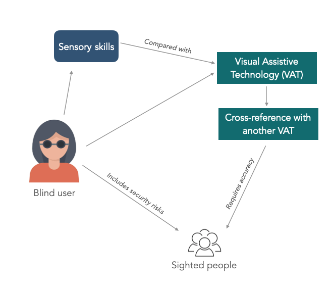

|
Rahaf Alharbi
I am a Ph.D. candidate in the School of Information at the University of Michigan, where I am advised by Dr. Robin Brewer and Dr. Sarita Schoenebeck. Broadly, my research lies at the intersection of accessibility and human-computer interaction (HCI). I draw from disability studies and disability justice activism to understand, critique, build, and design real-world technologies. In collaboration with blind communities, a key thread of my research aims to rethink artificial intelligence (AI) tools for visual information access by surfacing and combating privacy and transparency harms. Additionally, I have led and collaborated on projects related to accessible workplaces and multilingual captioning with D/deaf and neurodivergent communities. My scholarly work has been published in top-tier HCI venues, including ACM CHI, ASSETS, and CSCW.
I interned at Microsoft Research with the Ability team and at Meta with the Responsible AI team. Prior to graduate school, I obtained my Bachelor of Science degree in Mechanical Engineering (minor in Ethnic Studies) at the University of California, San Diego.
Email /
CV (last updated Oct 2024) /
Google Scholar
|

|
Updates
- Oct. 2024: I am presenting my paper and a doctoral consortium poster at ASSETS 2024 in person!
- Oct. 2024: I passed my dissertation proposal! I am now ABD!
- Oct. 2024: I was awarded the Gary M. Olson Outstanding PhD Student Award by UMSI!
- May 2024: Selected to attend HCIC as a University of Michigan representative. Super excited to chat with old and new friends!
- June 2024: My paper was conditionally accepted to ASSETS 2024! I am really excited to share this work soon on AI accessible verification and visual access.
- May 2024: Selected to attend HCIC as a University of Michigan representative. Super excited to chat with old and new friends!
- Mar. 2024: I won the Rackham Predoctoral Fellowship which aims to support dissertations that are "unusually creative, ambitious, and impactful."
- Aug. 2023: Our privacy and accessibility workshop was accepted to ASSETS 2023!
- May 2023: Started my internship at Meta in the Responsible AI team! I am excited to be back in California!
- Mar. 2023: Excited to present our paper “Accessibility Barriers, Conflicts, and Repairs: Understanding the Experience of Professionals with Disabilities in Hybrid Meetings” at CHI 2023 in Hamburg, Germany.
- Dec. 2022: I passed my prelim defense! I’m now a Ph.D. candidate!
- May 2022: I started my internship at Microsoft Research in the Ability team!
- Apr. 2022: My first first-author paper was accepted to CSCW 2022! Excited to present my study on the benefits and harms that Blind people perceive of future privacy technology (obfuscation).
- Nov. 2022: I passed my pre-candidacy defense!
|
Selected Journal and Conference Publications

Misfitting With AI: How Blind People Verify and Contest AI Errors
Rahaf Alharbi, Pa Lor, Jaylin Herskovitz, Sarita Schoenebeck, Robin Brewer
ASSETS 2024
PDF
We interviewed 26 blind people to understand how they make sense of errors in AI-enabled visual assistance technologies. We described common errors such as processing issues and cross-cultural bias. Blind people developed tactics to readdress and identify AI errors such as everyday experimentation in low-risk settings and strategically involving sighted people. We drew from disability studies framework of misfitting and fitting to expand our findings, and inform responsible AI scholarship.
Accessibility Barriers, Conflicts, and Repairs: Understanding the Experience of Professionals with Disabilities in Hybrid Meetings
Rahaf Alharbi, John Tang, Karl Henderson
CHI 2023
PDF /
ACM DL /
Talk
We interviewed 21 professionals with disabilities to unpack the accessibility dimensions of hybrid meetings. Our analysis demonstrates how invisible and visible access labor may support or undermine accessibility in hybrid meetings. We offer practical suggestions and design directions to make hybrid meetings accessible.
Hacking, Switching, Combining: Understanding and Supporting DIY Assistive Technology Design by Blind People
Jaylin Herskovitz, Andi Xu, Rahaf Alharbi, Anhong Guo
CHI 2023
PDF /
ACM DL /
Talk /
Dataset
Current assistive technologies (AT) often fail to support the unique needs of Blind people, so they often 'hack' and create Do-it-Yourself (DIY) AT. To further understand and support DIY AT, we conducted two-stage interviews and diary study with 12 Blind participants and we present design considerations for future DIY technology systems to support existing customization and creation process of Blind people.
Definition Drives Design: Disability Models and Mechanisms of Bias in AI Technologies
Denis Newman-Griffis, Jessica Sage Rauchberg, Rahaf Alharbi, Louise Hickman, Harry Hochheiser
First Monday
PDF /
First Monday DL
We reveal how AI bias stems from various design choices, including problem definition, data selection, technology use, and operational elements. We show that differing disability definitions drive distinct design decisions and AI biases. Our analysis offers a framework for scrutinizing AI in decision-making and promotes disability-led design for equitable AI.
Understanding Emerging Obfuscation Technologies in Visual Description Services for Blind and Low Vision People
Rahaf Alharbi, Robin N. Brewer, Sarita Schoenebeck
CSCW 2022
PDF /
ACM DL /
Talk
Machine learning approaches such as obfuscation are often thought of as the state-of-art solution to addressing visual privacy concerns. We interviewed 20 Blind and low vision people to understand their perspectives on obfuscation. We found that while obfuscation may be beneficial, it imposes significant trust and accessibility issues. Participants worried that cultural or gendered privacy needs might be overlooked in obfuscation systems. We applied the framework of interdependence to rethink current obfuscation approaches, and provided more inclusive design directions.
|